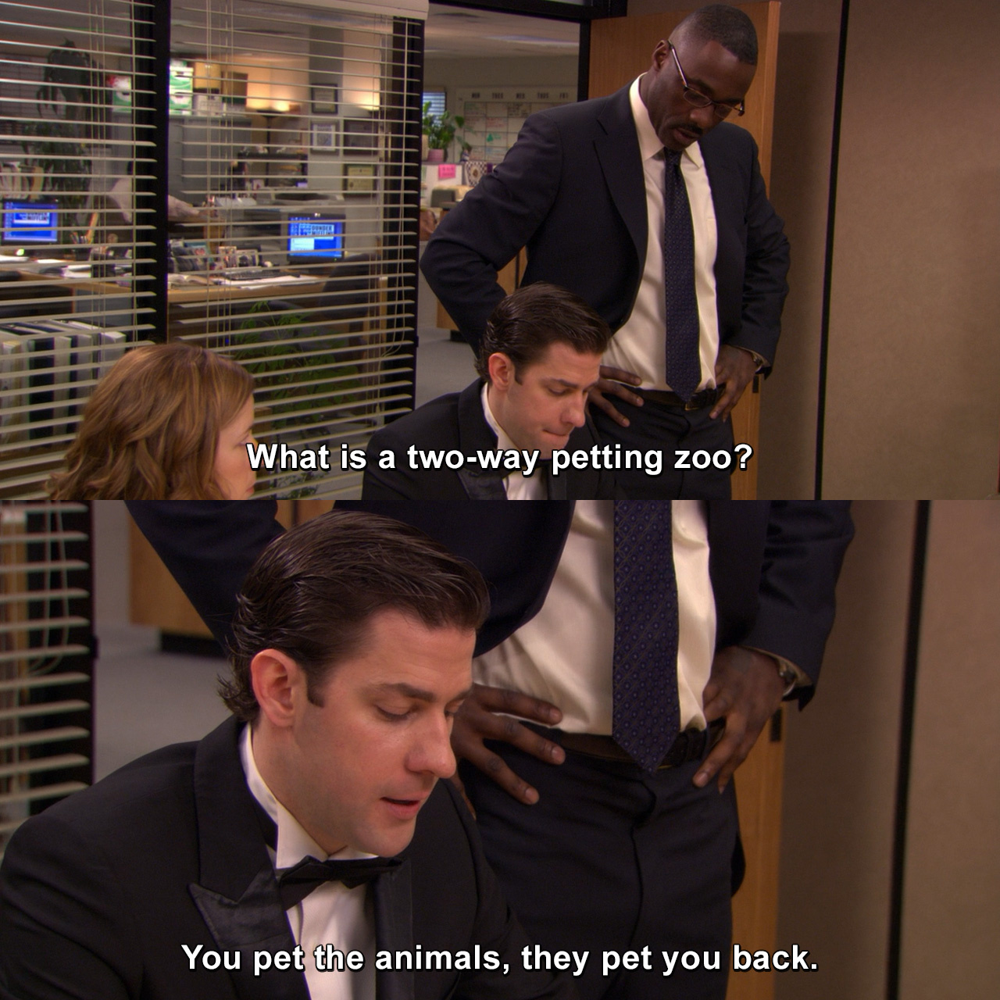

ActívateApp
Últimas actividades
| Inicio |
Término |
Comuna |
Sector |
Tema |
Foto |
| 2022-04-16 11:00 |
2022-04-16 15:30 |
Santiago |
Barrio Universitario |
Ciclo de anime |
|
| 2022-04-17 10:00 |
2022-04-17 13:00 |
Vitacura |
Parque Bicentenario |
Two Way Pet Zoo |
 |
| 2022-04-16 19:00 |
2022-04-16 21:00 |
Providencia |
Plaza de la aviación |
Jazz al aire libre |
|
| 2022-04-23 11:00 |
2022-04-23 17:30 |
Ñuñoa |
Plaza Ñuñoa |
Feria del libro usado |
|
| 2022-04-24 16:00 |
2022-04-24 19:00 |
Santiago |
Barrio Lastarria |
Teatro callejero |
|